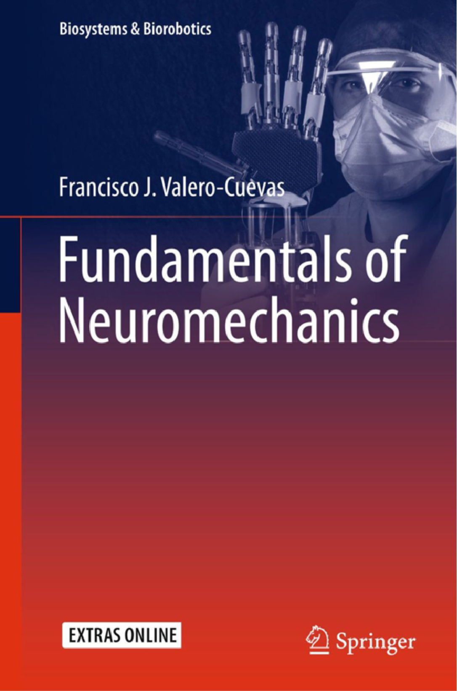
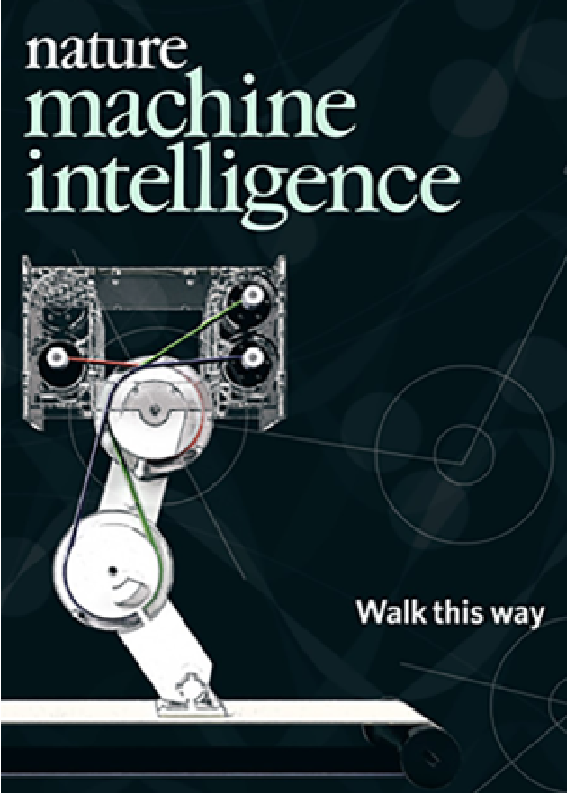
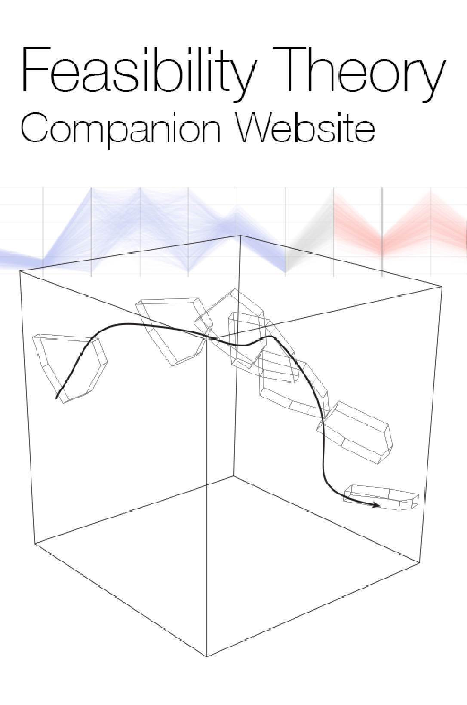
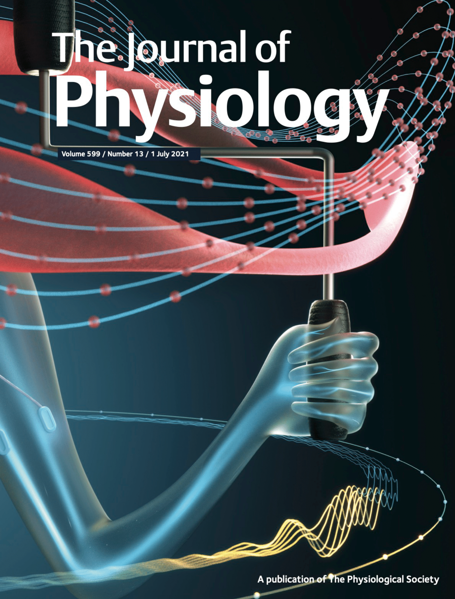
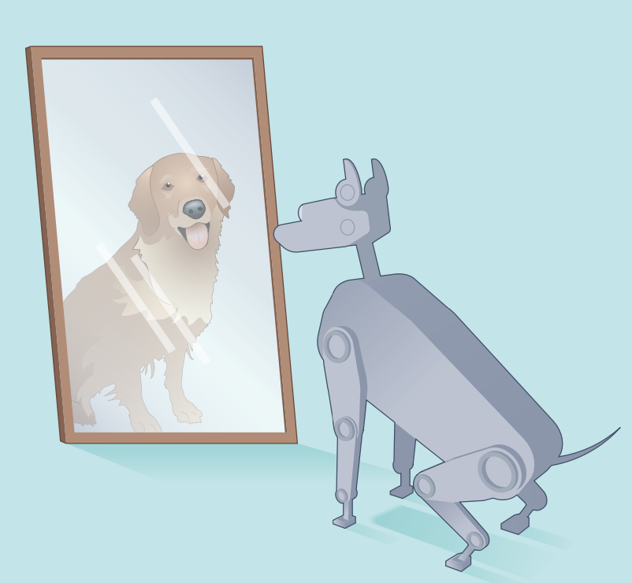

<div class="home">

  <div style="padding-bottom:40px">
    <center><b>Welcome to the Valero Lab!</b></center>
  Our laboratory is dedicated to understanding the biomechanics, neuromuscular control, and clinical rehabilitation of human mobility, with an emphasis on translation to robotics and Artificial Intelligence. Towards this end, we employ a synergy of experimental and theoretical techniques. 
  Our diverse experimental arsenal ranges from physiological recordings, computational models, machine learning, and neuromorphic computing. These procedures in turn inform theoretical work and devices to restore sensorimotor function for rehabilitation, and create neuro-inspired robots, circuits, and algorithms.
  <!--Our laboratory is dedicated to understanding the biomechanics, neuromuscular control and clinical rehabilitation of human mobility, with an emphasis on dexterous hand function. Towards this end, we employ a synergy of experimental and theoretical techniques.
  Our diverse experimental arsenal ranges from EMG recording and custom-made virtual reality modules, detailed characterization of multifinger structure and function, to mapping the function of the human brain with fMRI. These procedures in turn inform theoretical work to characterize complex sensorimotor function through rigorous and anatomically faithful mathematical models.
  -->  
<table style="width:100%">
  <tr>
    <th><a href="fundamentals"></a></th>
    <th>  <a href="g2p"></a></th>
    <th>  <a href="supplemental_sites/feasibility_theory_frontiers_2018"></a></th>

  </tr>

  <table style="width:100%" style="float:center">
  <tr>
    <th>  <a href="Papers/Laine_Cohn_Valero-Cuevas_JPhys2021.pdf"></a></th>
  </tr>

</table>
  
  <br>
  <b>Valero-Cuevas FJ, Erwin A. <a href="../Papers/2022_Valero-Cuevas_Erwin_NMI_News_and_Views .pdf">Bio-robots step towards brain–body co-adaptation.</a> Nature Machine Intelligence, 2022</b><br>
  <a href="../Papers/2022_Valero-Cuevas_Erwin_NMI_News_and_Views .pdf"></a><br>

  </br></br>
  <b> General to Particular Algorithm (G2P) </b></br>
  <a href="/g2p/">Companion website to Nature Machine Intelligence Paper</a>
<br>


</br></br>
  <b> PostDoc Position Available </b></br>
  <a href="flyers/postdocAd.pdf">Download Job Opportunity PDF</a>
<br>

</div>
<div><p>
    Ronald Tutor Hall, RTH-421<br>
    3710 S. McClintock Ave<br>
    Los Angeles, CA 90089-2905, USA<br>
    (213) 740-4219 ; Fax: (213) 821-5696
  </p>
</div>

    <iframe src="https://www.google.com/maps/embed?pb=!1m18!1m12!1m3!1d3306.924975500565!2d-118.29214788478588!3d34.02013668061464!2m3!1f0!2f0!3f0!3m2!1i1024!2i768!4f13.1!3m3!1m2!1s0x80c2c7fc9ad4d9bd%3A0x7f0dfd17fcb6ec29!2s3710+McClintock+Ave%2C+Los+Angeles%2C+CA+90089!5e0!3m2!1sen!2sus!4v1453572044486" width="100%" height="200" frameborder="0" style="border:0" allowfullscreen></iframe>


</div>
